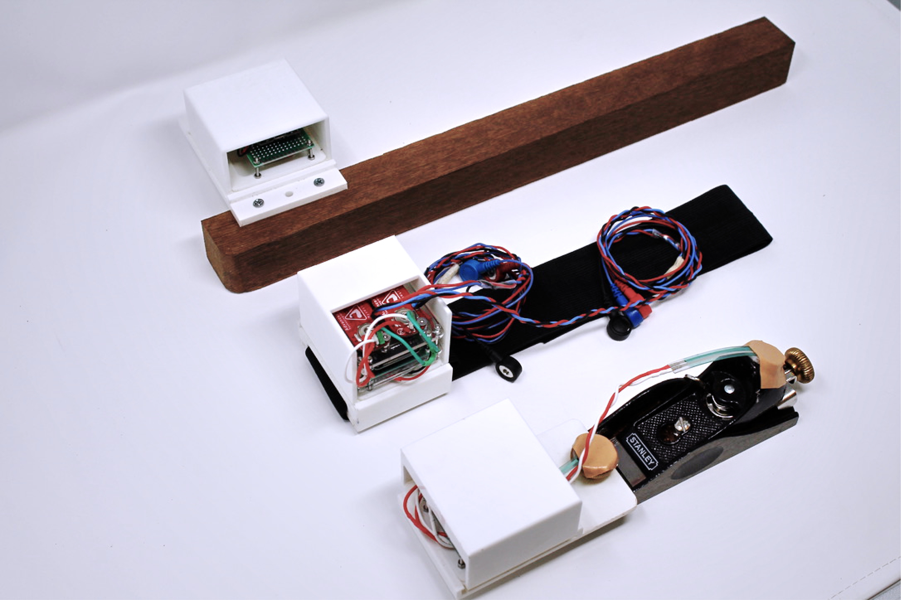

Chasing Tacit Knowledge: Multi-layered Sensing in Woodworking
Abstract:
We discuss existent approaches to trace tacit knowledge in craft practices through a turn to more-than-human centered design. This leads to a call for a multi-layered sensing system that covers not only the human body but also the tools and materials involved. Furthermore, it stresses the necessity of relational data collection and analysis. We present the design and implementation of this concept for a traditional woodworking practice: evening out wood with a block plane. In closing, we show feasibility of the suggested design through an initial pilot test. The argument contributes a theoretical turn to material-based sensing principles in the search for ways to track tacit knowledge, it outlines key design principles of this approach, provides an example implementation, and indicates a first validation through pilot data.


Due to this paper is still under submission, I post only a few paragraphs. Further content are still under construction, patience yay